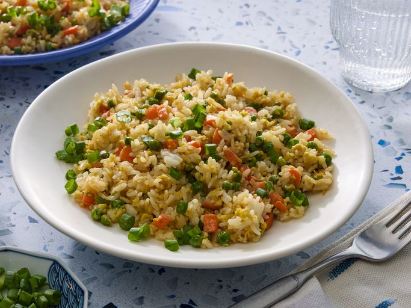

Home
Fried Rice

Description
This fried rice recipe only takes 15 minutes to cook and tastes just
like you get at your favorite Chinese restaurant. Leftover rice,
plus a couple of eggs, baby carrots, peas, and soy sauce is all you
need. Garnish with sliced green onions, if desired.
Ingredients
- 2/3 cup chopped baby carrots
- 1/2 cup frozen green peas
- 2 tablespoons vegetable oil
- 1 clove garlic, minced, or to taste (Optional)
- 2 large eggs
- 3 cups leftover cooked and chilled white rice
- 1 tablespoon soy sauce
- 2 teaspoons seasame oil, or to taste
Steps
-
Place carrots in a small saucepan and cover with water. Bring to
a low boil and cook for 3 to 5 minutes. Stir in peas, then
immediately drain in a colander.
-
Heat a wok over high heat. Pour in vegetable oil, then stir in
carrots, peas, and garlic; cook for about 30 seconds. Add eggs;
stir quickly to scramble eggs with vegetables.
-
Stir in cooked rice. Add soy sauce and toss rice to coat.
Drizzle with sesame oil and toss again.
Credits